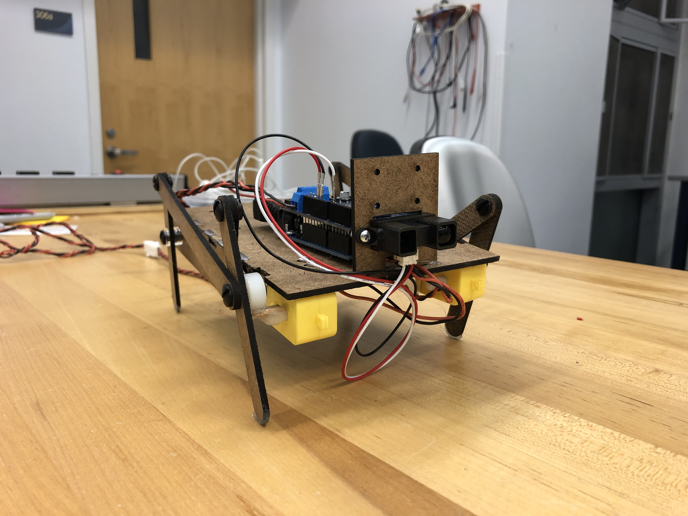
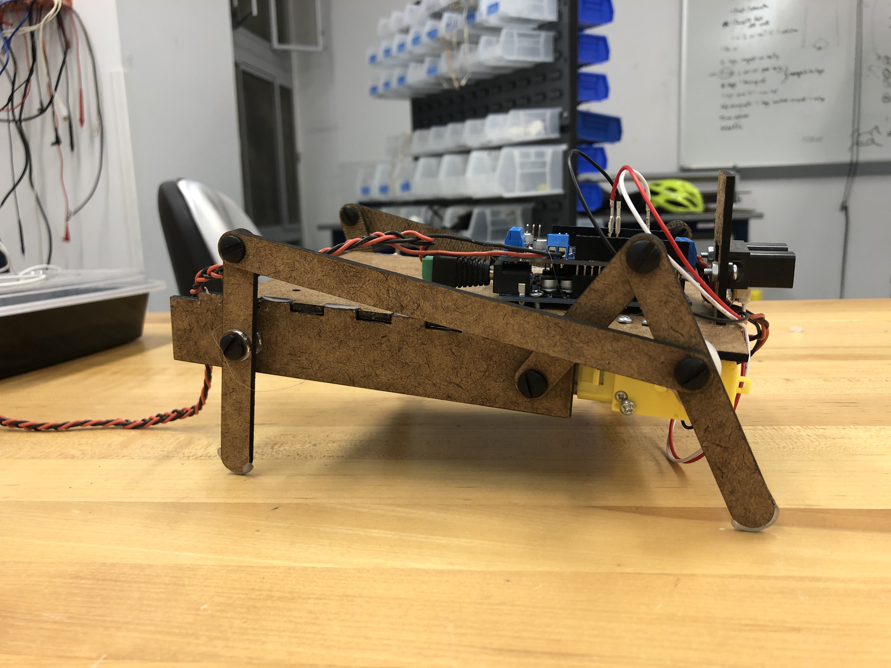

Sprint 2
We want to develop the personality of the robot more especially with mechanical design and do a lot of user testing to make sure that the robot is “cute” and personable.
Goals:
- Implement computer vision on the Raspberry Pi
- Use Raspberry Pi to communicate with Arduino
- Improve walking mechanism
- Develop robot appearance/personality especially making it “cute”
Progress:
- Moves with improved linkage leg mechanism
- Can identify people with the Raspi camera
- Has fluffy “pink monster” appearance people found cute
- The walking mechanism has a wobble aspect which adds a cute personality factor
- Arduino LED lights up when Raspi sees a person (10 sec)
Mechanical
- Have a functional leg mechanism
- iterations: foot shape, 3D print, longer legs
- https://grabcad.com/library/walking-robot-mechanism-1 Decided on 4 leg linkage design based on this


Software
- Finalize sensors we want and goals
- Raspberry Pi-Arduino integration
Design
- Research into types of walk cycles: peppy, confident, meandering, off-balance. We liked the back and forth movement that the linkage produced
- Mock up type of skins. People loved the pink fluff monster skin
- Furry monster like (pink fluff)
- Furry animal like (cow print fuzzy)
- Technical look (see through panel acrylic)
- Discussed type of shape
- Give it a butt, stuffed look
- Make it rounder- skin sags in the middle